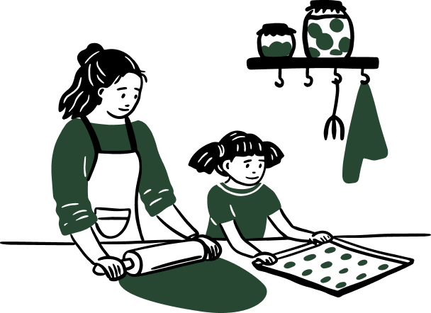
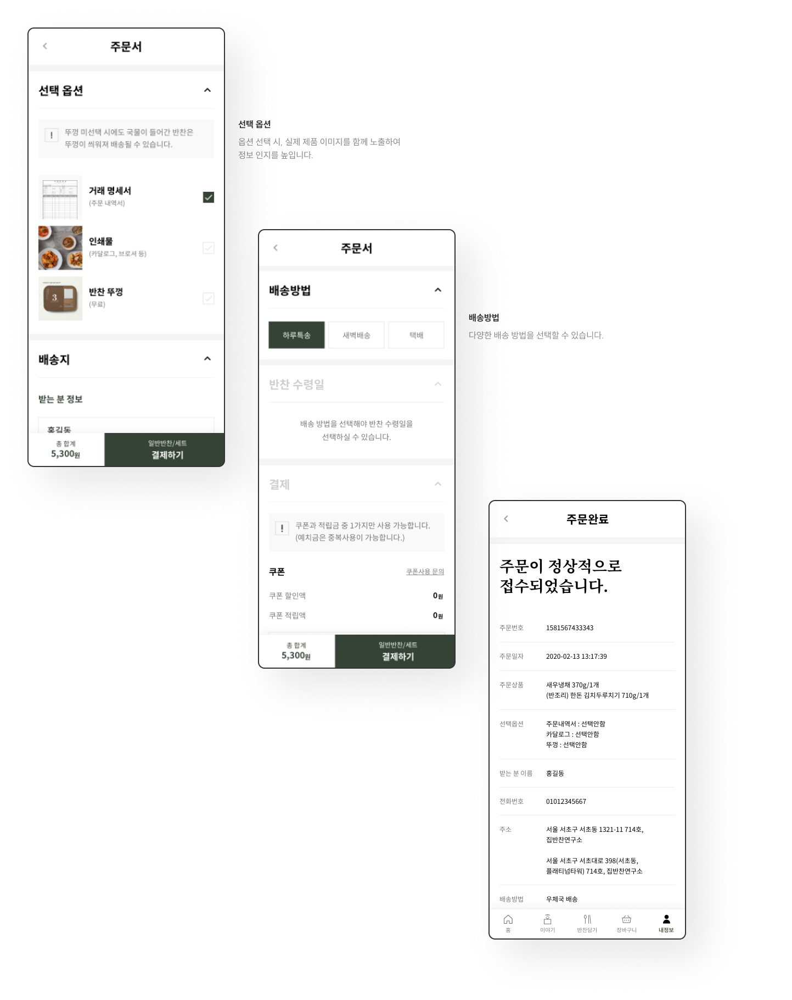
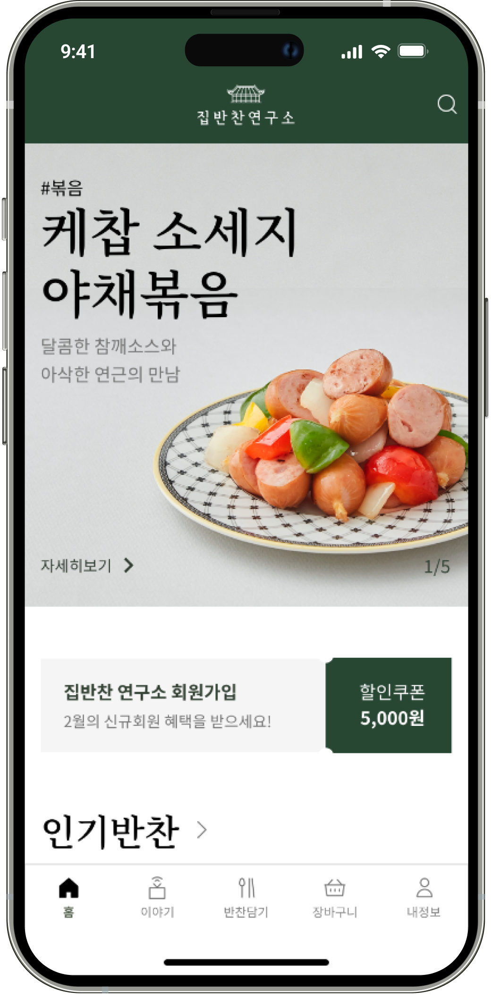
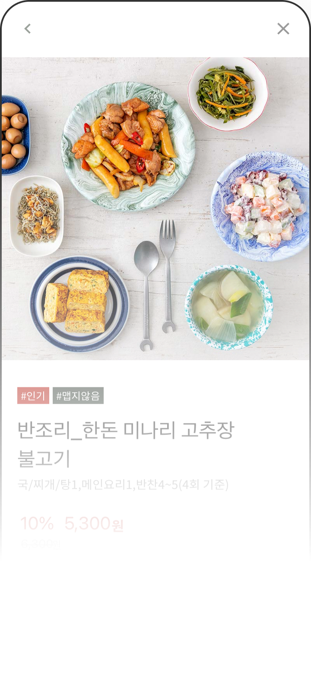
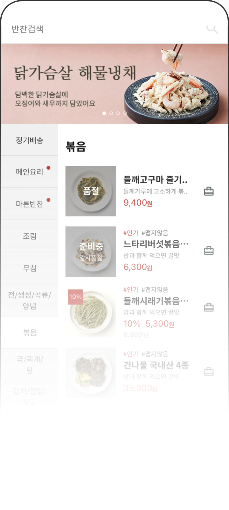
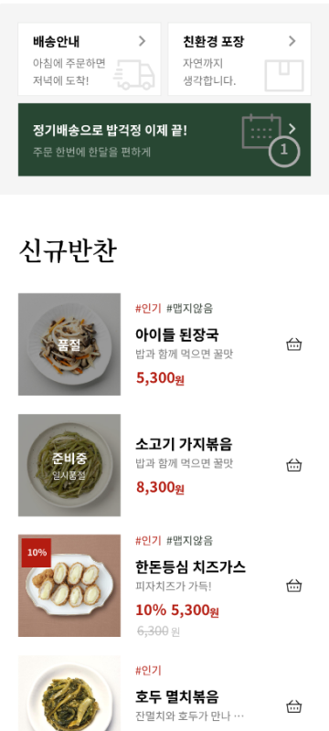
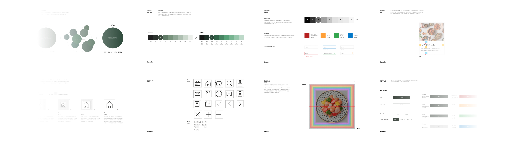

집반찬연구소
Branding Strategy & Design
UX & Service Planning
app
2022
집반찬연구소 웹, 모바일 UX/UI 리뉴얼 프로젝트는
인지 프로세스 검증을 바탕으로
기존 플랫폼의 문제점을 분석하여 UX 개선 전략 제안부터
브랜드 가이드 제작 및 적용까지 토탈 솔루션을 제공하였습니다.
기존 플랫폼의 문제점을 분석하여 UX 개선 전략 제안부터
브랜드 가이드 제작 및 적용까지 토탈 솔루션을 제공하였습니다.
시간을 선물합니다.
프리미엄 반찬, 집반찬연구소.
프리미엄 반찬, 집반찬연구소.
as-is
인지 프로세스를 방해하는 UX/UI로 인해
사용성이 떨어지며 구매, 주문, 배송방법 선택 등
주요 기능의 플로우가 복잡하다.
사용성이 떨어지며 구매, 주문, 배송방법 선택 등
주요 기능의 플로우가 복잡하다.
브랜드 가이드 부재로 전반적인 어플리케이션 요소가
일관적이지 않아 통일성과 심미성이 떨어진다.
일관적이지 않아 통일성과 심미성이 떨어진다.
to-be
UX/UI 비주얼 패턴을 전반적으로 개선하여
시인성과 사용성을 높였습니다.
또한, 브랜드 가이드를 일관적으로 적용하여
사용자에게 질적 만족감을 제공합니다.
시인성과 사용성을 높였습니다.
또한, 브랜드 가이드를 일관적으로 적용하여
사용자에게 질적 만족감을 제공합니다.
프로젝트 목표
UXUI 비주얼 패턴을 전반적으로 개선하여 시인성과 사용성을
높였습니다.
또한, 브랜드 가이드를 일관적으로 적용하여 사용자에게 질적 만족감을 제공합니다.
또한, 브랜드 가이드를 일관적으로 적용하여 사용자에게 질적 만족감을 제공합니다.
상품정보, 주문결제 등
주요 기능 flow를
개선합니다.
주요 기능 flow를
개선합니다.
인지 과정 검증에
기반한
비주얼 패턴을
개선합니다.
기반한
비주얼 패턴을
개선합니다.
인터페이스에
디자인적 요소를
일관적으로 적용합니다.
디자인적 요소를
일관적으로 적용합니다.

사용자 인지 과정
사용자의 인지 프로세스를 중심으로 기존 플랫폼에서
개선이 필요한 지점을 도출합니다.
개선이 필요한 지점을 도출합니다.
01
지각
누를 수 있는 버튼인지, 읽기만 가능한 콘텐츠인지 판단할 수 있는
비주얼 패턴이 모든 요소에 적용되어 있는가?
02
비주얼패턴
사용자가 의도를 갖고 기능이나 서비스를 수행하는 과정에서 모든
요소가 시선의 흐름 안에 위치하는가?
03
상황인지
사용자의 디바이스 사용 능력은 어떤 수준인가?
04
기억
다른 앱과 유사한 방식으로 사용할 수 있는가? 사용 방법을 쉽게
학습하고 기억할 수 있는가?
05
행동
서비스를 실제로 사용하는 과정에서 기능 상의 오류가 없는가?
비주얼 패턴 단계에서 사용자 인지를
방해하는 요소를 도출하여
이를 개선할 수 있는 디자인 전략을 수립합니다.
방해하는 요소를 도출하여
이를 개선할 수 있는 디자인 전략을 수립합니다.
디자인 전략
UXUI 비주얼 패턴을 전반적으로 개선하여 시인성과
사용성을 높였습니다. 또한, 브랜드 가이드를 일관적으로
적용하여 사용자에게 질적 만족감을 제공합니다.
사용성을 높였습니다. 또한, 브랜드 가이드를 일관적으로
적용하여 사용자에게 질적 만족감을 제공합니다.
주문서 작성 UI 사용성 개선
명료한 정보 위계를 통한
상품 및 브랜드 정보
시인성 개선
상품 및 브랜드 정보
시인성 개선
온라인 서비스에 맞는
브랜드 가이드라인 구축
브랜드 가이드라인 구축
주문서 작성 ui
사용성 개선
사용성 개선
주요 고객층이 중장년 연령대에 분포하는 점을 고려하여,
주문 시 필요한 정보를 한눈에 파악하고
배송 및 결제 정보를 손쉽게 입력할 수 있도록 UI 화면 플로우를 개선합니다.
주문 시 필요한 정보를 한눈에 파악하고
배송 및 결제 정보를 손쉽게 입력할 수 있도록 UI 화면 플로우를 개선합니다.

명료한 정보 위계를 통한
상품 및 브랜드 정보
시인성 개선
상품 및 브랜드 정보
시인성 개선
배너와 버튼 디자인에 비주얼 패턴을 적용하여
사용자의 행동을 정확하게 유도하고, 상품 및 브랜드 정보 영역에서
시각적 정보 위계를 명료하게 구분하여 시인성을 높입니다.
사용자의 행동을 정확하게 유도하고, 상품 및 브랜드 정보 영역에서
시각적 정보 위계를 명료하게 구분하여 시인성을 높입니다.




온라인 서비스에 맞는
브랜드 가이드라인 구축 개선
브랜드 가이드라인 구축 개선
오프라인에서 완성도있게 구축된 브랜드 가이드라인을
바탕으로,
온라인 서비스 환경에서 다양하게 적용할 수 있는 브랜드 가이드라인을
구축합니다. 색상, 간격, 아이콘, 썸네일 등 모든 화면의 컴포넌트에 일관된
브랜드 가이드라인을 적용하여 통일된 서비스 경험을 제공합니다.
온라인 서비스 환경에서 다양하게 적용할 수 있는 브랜드 가이드라인을
구축합니다. 색상, 간격, 아이콘, 썸네일 등 모든 화면의 컴포넌트에 일관된
브랜드 가이드라인을 적용하여 통일된 서비스 경험을 제공합니다.

타켓
강남4구, 마포, 용산에
거주하는 초등학교 저학년
이하의 자녀를 둔 어머니
거주하는 초등학교 저학년
이하의 자녀를 둔 어머니
프리미엄 반찬을
원하는 소비자
원하는 소비자
각진
진중한
단아한
믿을 수 있는
정직한
프리미엄
정렬된
여유
차분한
직관적인
품위있는
간결한
진정성
다양한
일관적인